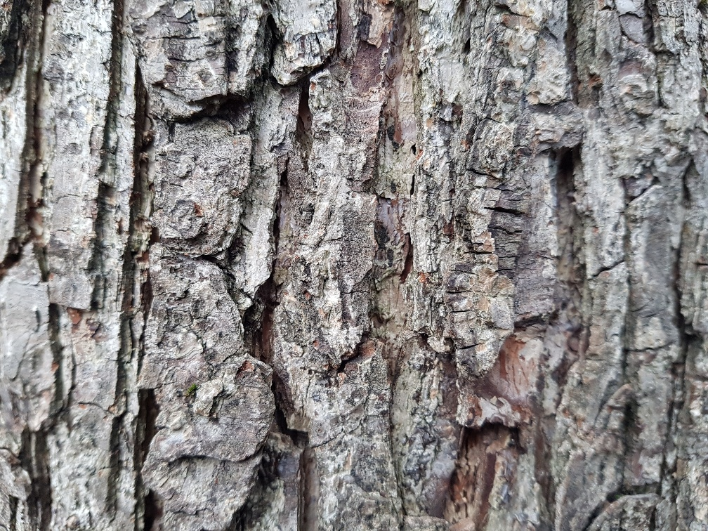
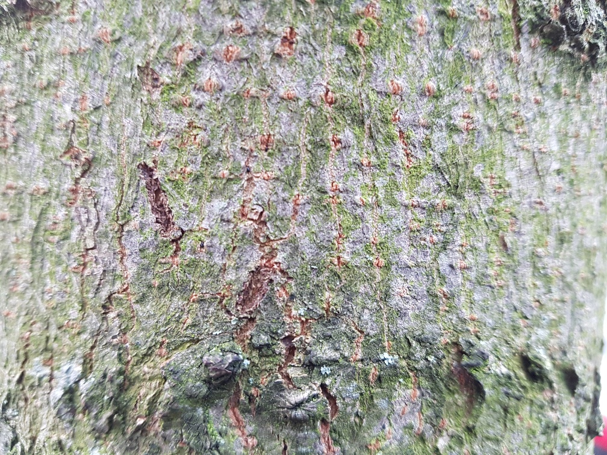
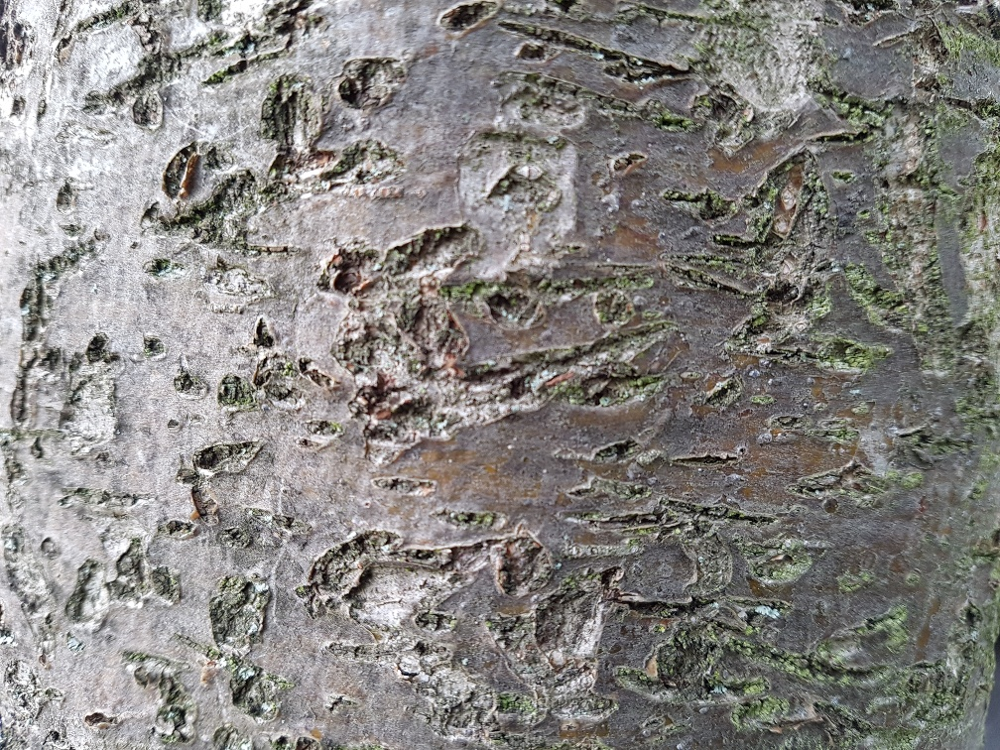
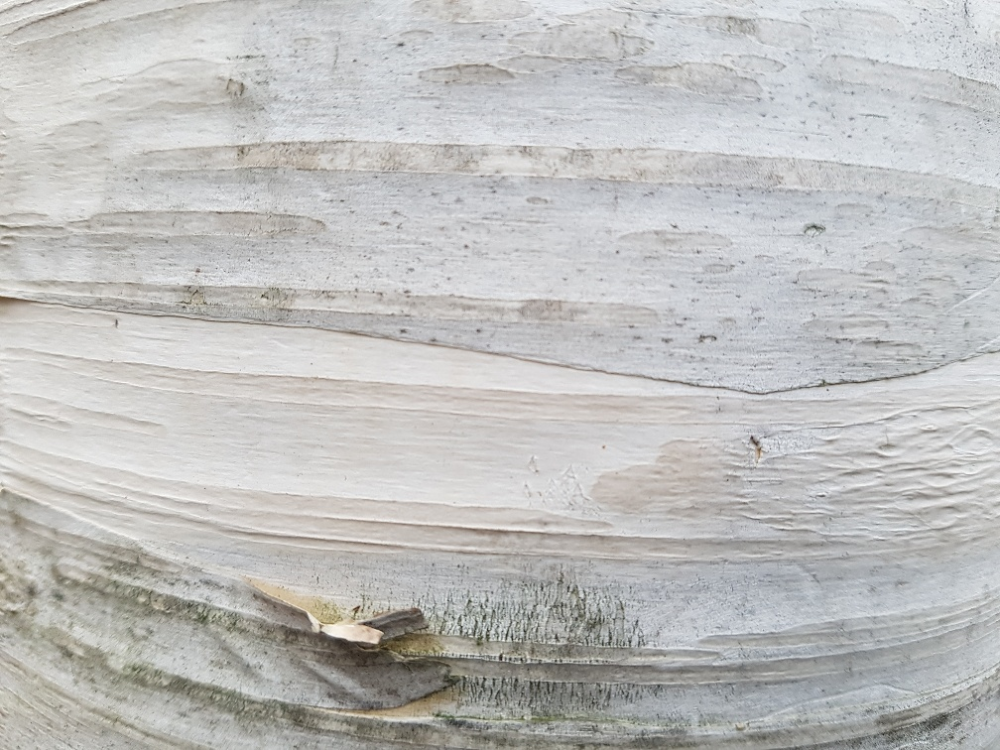

Learning to code at Founders and Coders would represent, for Saul Holding, a new beginning. He already has experience as a coder, but almost all of his time was spent at the same company, ploughing a narrower and narrower, non-web-based furrow.
He chose to step out of the workplace nearly two years ago when the company was taken over and a voluntary redundancy package was made available to the employees.
Since deciding to return to the workplace, he has, however, found it very difficult to get interviews, perhaps because of his age (50), and/or the length of time he has been out of work, and/or his not being sufficiently abreast of the latest coding and working methodologies, and/or his being entirely self-taught – he has no coding-related qualifications.
So, he would like to make a fresh start, building once again from the ground up, but this time learning with others, instead of on his own. It’s never too late - or so he hopes!
Evidence of his coding ability can be found on freeCodeCamp and CodeWars.
The repository for this webpage can be found on GitHub.
And here's some bark (Saul is very fond of bark):
- 
- 
- 
- 